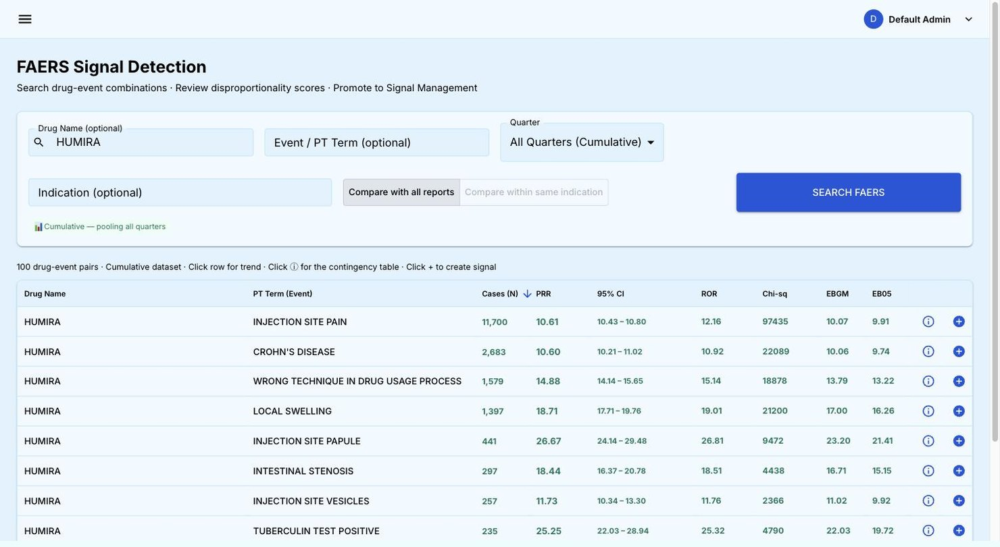
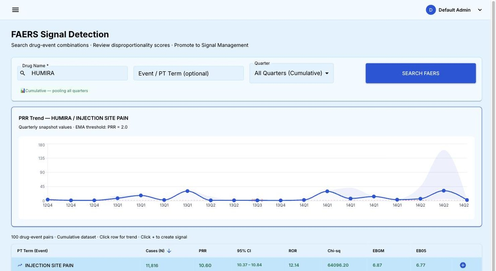
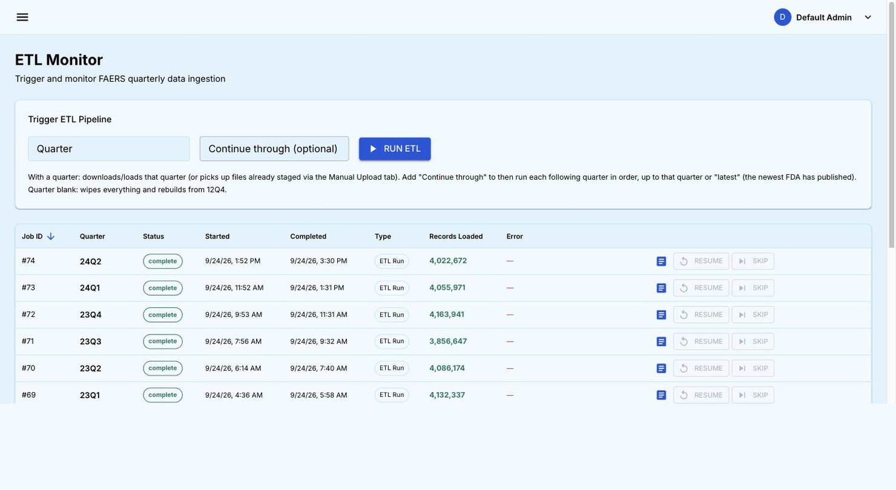
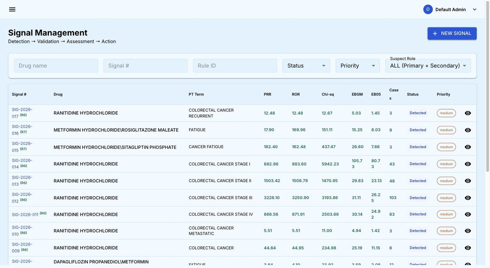

PV Signal Manager
See a pattern. Confirm it's real. Decide what to do about it.
A pharmacovigilance signal detection and management platform. It watches every drug and every side effect in your safety data, flags the combinations that stand out, and walks your team through reviewing, confirming and acting on them — with a complete record of who decided what, and when.
- FAERS & Argus data
- EMA-aligned thresholds
- Full audit trail
From first search to a standing watch
A look inside the application.
{kind=link}

{kind=link}

{kind=link}

{kind=link}

Built for accountable, repeatable signal management
Disproportionality statistics
PRR, ROR, χ², EBGM and EB05 with confidence intervals for every drug–event pair, cumulative or by quarter.
Multiple data sources
Public FDA FAERS data alongside your own Argus safety data, with rules scoped to either source.
Automatic re-checks
Saved rules run every time new data finishes loading, so no quarter depends on someone remembering to look.
Enforced four-eyes review
Stage ownership is enforced by the system, not by honor: nobody can approve their own finding.
Complete audit trail
A permanent, time-stamped record of every decision, alongside the regulatory follow-through for each signal.
Built for millions of records
Paged, sortable results over the full reporting history, and loads that recover from interruptions without starting over.
What changes when the spreadsheet becomes a system
| Task | Spreadsheet-based review | PV Signal Manager |
|---|---|---|
| Spotting a pattern worth reviewing | Someone has to think to go looking | Checked automatically, every quarter |
| Recording who decided what | Email threads and tracked changes | A permanent, time-stamped record |
| Stopping self-approval | Relies on individual discipline | Enforced at every stage |
| Tracking regulatory follow-through | A separate document, if one exists | Built into the signal record |
| Handling years of reports | Slows down or breaks | Built for millions of records |
| Recovering from a failed data load | Start over from scratch | Resumes where it left off |
See it on your own products
A working session on your priority products takes under an hour to set up.
Schedule a WalkthroughScreens show the application running against public FDA FAERS data. They illustrate how the product works and are not safety findings about any drug shown.